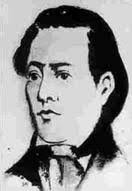

Alvarenga Peixoto
1742 – 1792 • Rio de Janeiro, Rio de Janeiro
Inácio José de Alvarenga Peixoto foi poeta e magistrado. Formado em Direito em Coimbra, atuou em Minas Gerais como magistrado e proprietário de minas, e casou-se com a poetisa Bárbara Heliodora. Com o nome pastoril de Eureste Fenício, escreveu sonetos, odes e o Canto Genetlíaco. Participou da Inconfidência Mineira, foi condenado ao degredo e morreu em Angola, em 1792.
Principais Obras
Temas Recorrentes
O amor, a natureza, o elogio a autoridades em poemas de ocasião e a reflexão sobre a vida e o destino, que se intensifica nos versos ligados ao período da prisão e do exílio.
Características de Escrita
Sonetos e odes de tom elegante e solene, com mitologia e convenções árcades; linguagem clara e musical, típica do gosto neoclássico.
Influências Artísticas
Formou-se no ambiente literário de Coimbra e de Vila Rica, convivendo com Cláudio Manuel da Costa e Gonzaga, e seguiu os modelos da lírica clássica e italiana.